Walls attack here. Felothar makes every creature you control deal damage equal to its TOUGHNESS and lets defenders attack anyway, which turns a pile of 0/6 blockers into a lethal board. The second thing he does is quieter and just as important: his sacrifice ability draws cards equal to toughness and discards equal to POWER — so eating a 0/13 Tree of Perdition draws thirteen cards and discards nothing. The commander 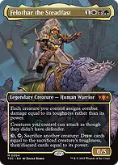Felothar the Steadfasttoughness becomes damage, defenders can attack, and {3} plus a sacrifice turns any wall into a huge no-downside draw spell. Every 0-power creature in the deck is a free refill waiting to happen. 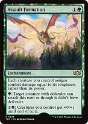Assault Formationthe same damage-swap on a two-mana enchantment, so the plan survives Felothar being removed. It also unlocks individual defenders for {G}. 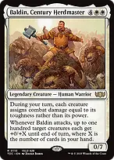Baldin, Century Herdmastera third copy of the effect during your turn, and his attack trigger pumps toughness across the whole board by your hand size. 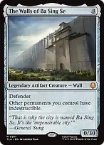The Walls of Ba Sing Se0/30. That is thirty damage in one attack, and every other permanent you control is indestructible while it is out. 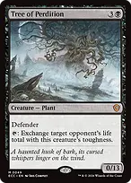Tree of Perdition0/13 that attacks for thirteen, taps to swap an opponent's life total down to thirteen, and feeds Felothar for thirteen cards. 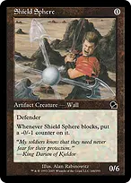Shield Spherefree, 0/6, and a perfect sacrifice target. Making the walls unblockable 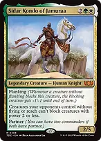Sidar Kondo of Jamuraaopponents' creatures without flying or reach cannot block creatures with power 2 or less. Every wall in this deck has power ZERO, so the whole team walks past the ground. 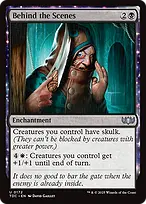Behind the Scenesskulk — your creatures cannot be blocked by anything with greater power. At power zero, that is nearly everything. 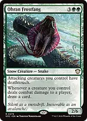Ohran Frostfangdeathtouch on attackers and a card for every one that connects. Blocking a 0/13 deathtoucher is not an option either. 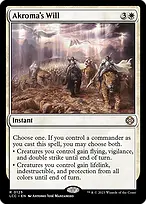Akroma's Willwith your commander out, take both halves. Double strike on a board of high-toughness attackers doubles a number that is already lethal. 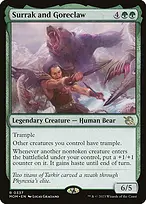Surrak and Goreclawtrample for everyone, so the walls stop being chump-blocked, plus a counter and haste on every creature that arrives. 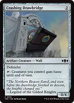Crashing Drawbridgehaste for the team, which turns a reanimation spell into an attack the same turn. The reanimation package, tuned to power Almost every recursion spell here caps on POWER, and your creatures have none. "Total power 10 or less" means "as many walls as you like". 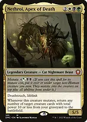Nethroi, Apex of Deathmutate returns any number of creatures with total power 10 or less. With a graveyard full of 0-power walls that is your entire graveyard, at once. 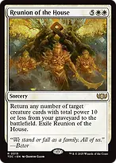Reunion of the Housethe same effect on a sorcery, with the same loophole. 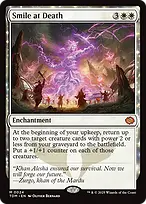Smile at Deathtwo creatures with power 2 or less back every upkeep, with counters on them. 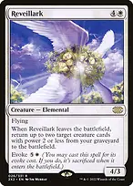Reveillarktwo more when it leaves, and evoking it gets there immediately. 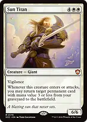Sun Titanany permanent with mana value 3 or less, on entry and on every attack. 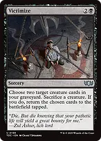Victimizesacrifice one wall to bring back two better ones. 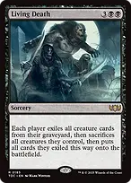Living Deathyour graveyard is full of cheap high-toughness bodies; theirs is not. 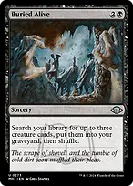Buried Aliveputs the three exact creatures you want into the yard. 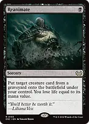Reanimateone mana, any graveyard. 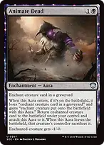Animate Deadthe second copy. 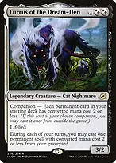Lurrus of the Dream-Dennot a companion here — just a body that recasts a cheap permanent from the graveyard every turn. 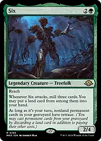Sixmills on attack and gives everything in your graveyard retrace, so a spare land buys back any nonland permanent. Mana out of the wall pile 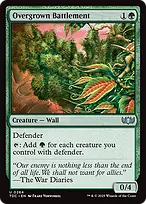Overgrown Battlementgreen mana per defender. On a developed board this is four or five mana from one card. 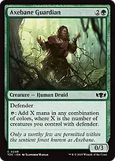Axebane Guardianthe same count, in any colours. 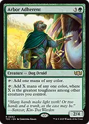Arbor Adherenttaps for X equal to the greatest toughness among your OTHER creatures. With The Walls of Ba Sing Se out that is thirty mana of one colour. 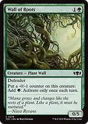Wall of Rootsmana without tapping, so it can still attack. 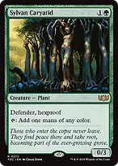Sylvan Caryatidhexproof fixing that also blocks forever. 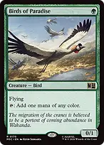Birds of Paradiseturn-one acceleration. 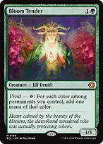Bloom Tenderthree colours off one tap in an Abzan board. 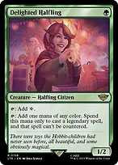Delighted Halflinguncounterable legendary spells, which covers Felothar himself. 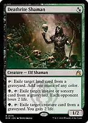Deathrite Shamanmana, graveyard hate, drain and lifegain from one two-drop. 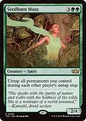Seedborn Museuntap everything on every opponent's turn — your mana walls, your blockers, and Felothar's tap ability. 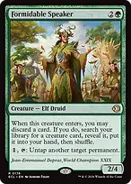Formidable Speakertutors a creature, and its untap ability resets Felothar or a mana wall. Cards that come with cards 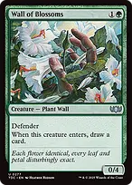Wall of Blossoms0/4 that replaces itself. 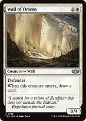Wall of Omensthe white copy. 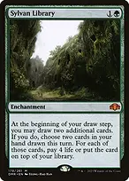Sylvan Librarywith this much life gain from Ikra Shidiqi, paying four life twice is cheap. 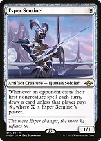Esper Sentineltaxes their first noncreature spell every turn. 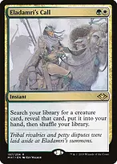Eladamri's Callinstant-speed tutor for whichever wall or hate bear the table needs. 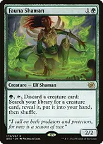Fauna Shamanconverts an unwanted creature into the right one, and fills the graveyard for the reanimation half. 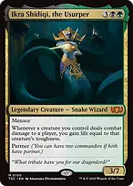Ikra Shidiqi, the Usurperlife equal to TOUGHNESS on every connection. With this board that is twenty or thirty life a turn. Taxing them while you set up 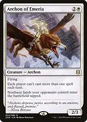Archon of Emeriaone spell per turn each, and their nonbasics enter tapped. A wall deck does not mind the symmetry; it is already playing one threat a turn. 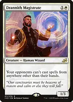Drannith Magistrateno casting from graveyards, exile or the command zone. It shuts off commanders entirely. 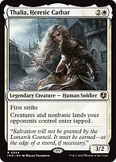Thalia, Heretic Cathareverything of theirs arrives tapped, so no surprise blockers in front of your attack. 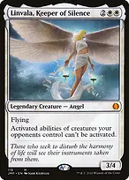Linvala, Keeper of Silencetheir creature abilities stop working; yours are mostly mana abilities on walls, which are unaffected by most hate anyway. 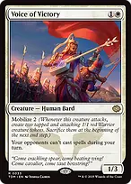Voice of Victoryopponents cannot cast spells during your turn at all — cast it before the alpha strike. 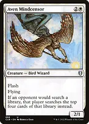Aven Mindcensorflash, and it blanks a tutor or a fetch. 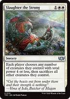Slaughter the Strongeach player keeps creatures with total power 4 or less. Your entire board has power zero, so this is a completely one-sided wrath. 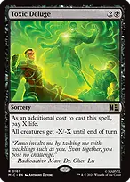Toxic Delugepay a small X and their creatures die while your high-toughness walls shrug it off. Removal and protection Swords to Plowsharesone mana, exiles anything. Anguished Unmakinginstant-speed exile for any nonland permanent. Assassin's Trophytwo mana for literally any permanent they control. Dauthi Voidwalkerunblockable, exiles what they would bury, and cashes in for a free cast of their best card. Shalai, Voice of Plentyhexproof for you and everything you control, and a mana sink that grows the board. Heroic Interventionhexproof and indestructible through a wrath. Veil of Summerone mana against blue and black, and it draws. Legolas's Quick Reflexessplit second, so it resolves through anything. Untaps a creature and turns it into a removal spell. Tower Defense+0/+5 to the team is a +5 damage pump per creature under Felothar, at instant speed. This is a combat trick that ends games. Elesh Norn, Mother of Machinesyour enter triggers double — two Wall of Blossoms cards, two Sun Titan returns — and theirs stop happening entirely. What to keep in an opening hand Keep a mana wall and a cheap body. Overgrown Battlement or Wall of Roots on turn two is what makes Felothar a turn-three play, and every wall you deploy early is a reanimation target later. Felothar the Steadfasthe is the whole plan, so protect him. Shalai, Heroic Intervention or an untapped Veil of Summer matters more than one extra attacker. Sacrifice for value, not for tempo. Felothar's ability costs {3} and a tap — most turns the right target is whichever wall has the highest toughness and zero power, and the right time is your end step or in response to a wrath. The Walls of Ba Sing Seeight mana, but the mana walls get you there, and once it lands your board is indestructible and one attack is thirty damage.